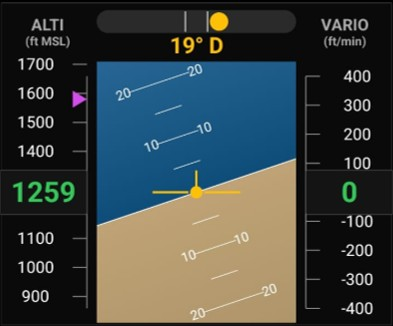

Possibilités
- Bloc combiné : bande de cap en haut, bille, horizon central.
- Échelles Altitude et Vario verticales.
- Bande de vitesse en bas avec arcs.
Gestes supportés
Appui long sur la bande de cap : saisir le cap à suivre
Appui long sur la colonne Altitude (à gauche) : saisir l'altitude à suivre (curseur magenta sur l'échelle)
Appui long sur l'horizon central : Caler l'horizon — confirmer que l'assiette actuelle devient la référence à plat (0/0).
Double-tap : —
NUMEFS
